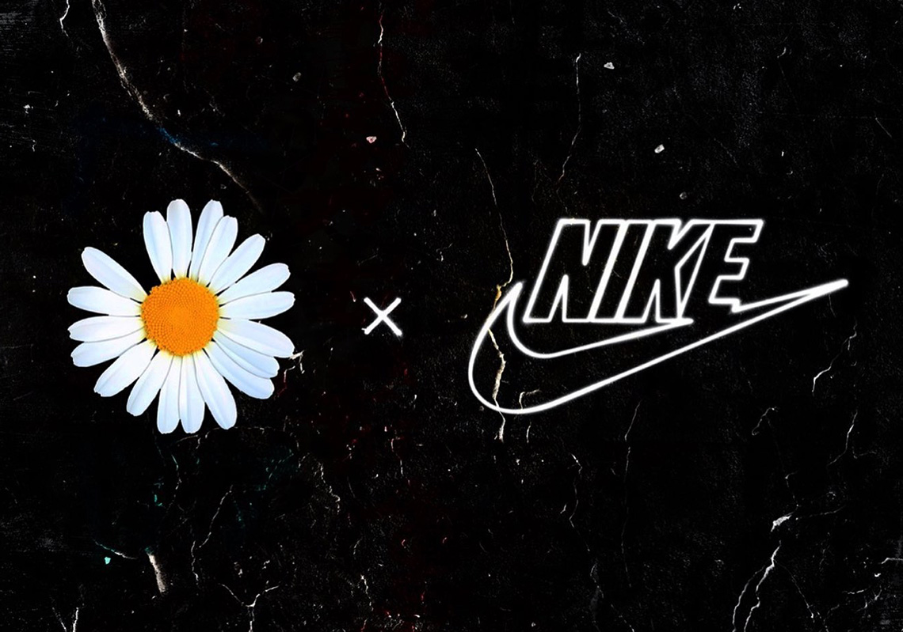
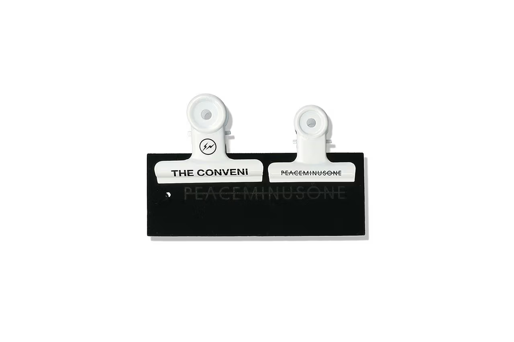
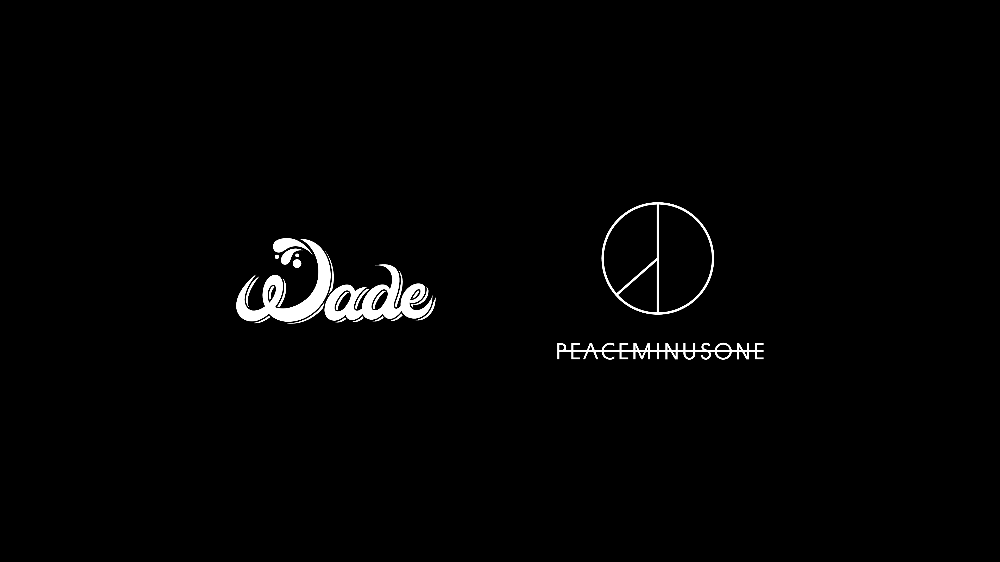

CO-BRAND |
||
|---|---|---|
|

PEACEMINUSONE x Nike Kwondo 1Before the official launch, Nike detailed on its official website how G-Dragon's PEACEMINUSONE x Nike Kwondo 1 was born. In Nike's latest "Behind the Design", Catalyst senior shoe designer Jupiter Desphy gives a brief introduction to the inspiration, story and reference sources behind the Korean superstar's latest shoe collaboration... |

fragment design x PEACEMINUSONEThis joint series maintains the most basic design technique, placing the Logo of its three major units with the words, supplemented by CMYK color blocks on the embroidery and back and other details, and launched long, short sleeve and black and white two colors. One of the most interesting is PEACEMINUSONE's most talked about metal clip (about $42), which is also available in two sizes and designs for... |

PEACEMINUSONE x Nike Kwondo 1The WADE x PEACEMINUSONE partnership will feature fashion, culture, and art releases across the digital and physical space. Coming together, the duo aims to combine WADE’s respect for diversity and place outside of the mainstream, with PEACEMINUSONE’s outlook on creative freedom. Kicking off the partnership will be “WADE Friends & Family (WADE F&F),” a membership NFT to be launched September 15. The NFT is the start of experimental collaborations with various renowned artists in the fashion and music scenes... |